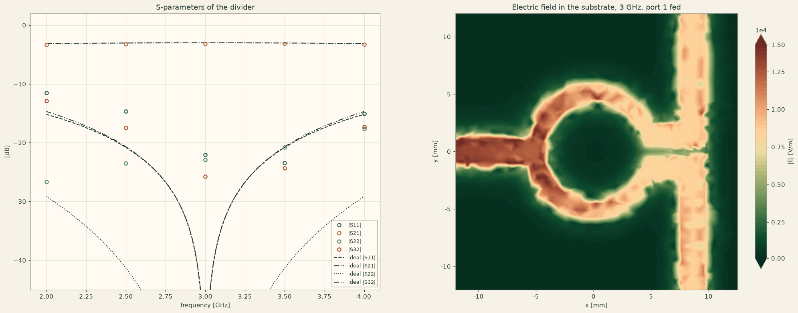
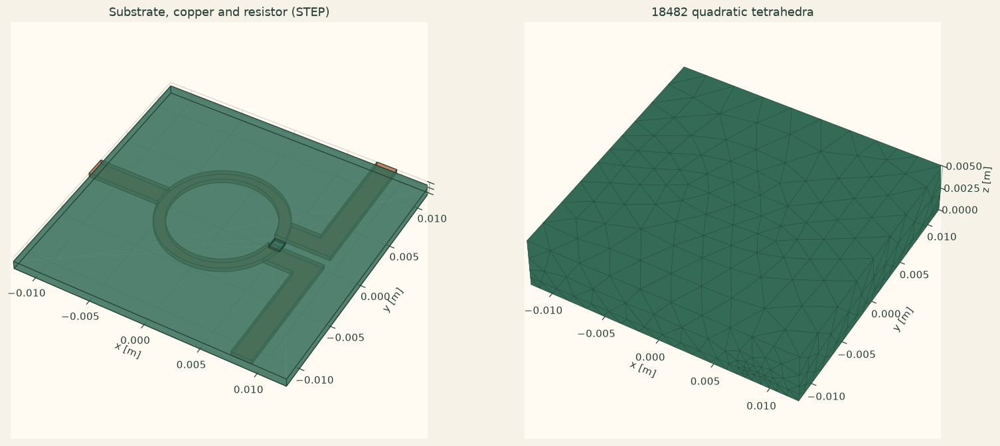

Docs › Examples › Microstrip Wilkinson power divider
Microwave circuits · 3D
Microstrip Wilkinson power divider
Two quarter-wave microstrip arms split a 3 GHz signal equally while a 100-ohm resistor between their ends isolates the two outputs.
Run locally with OneSimulation. The example downloads are free. Running them requires an activated runtime. Runtime Alpha 0.2.1a7 · CPython 3.13 on macOS (Apple Silicon), Ubuntu 22.04 (x86-64), and Windows x64. Installation and activation · View pilot plans. Scope of the reference checks.

What it computes
OneSimulation solves the full Maxwell equation in substrate and air with second-order Nédélec elements; the copper is a perfect-conductor sheet between two mesh regions, the isolation resistor a lumped element on the substrate face between the arm ends, and each line ends in a TEM port computed from the electrostatic potential of its cross-section; a port sweep gives the 3x3 S-matrix in 50 ohm against the circuit theory of the divider. The script that builds the STEP files comes with the notebook.
What it checks
At 3 GHz |S21| = |S31| = -3.13 dB in phase (0.13 degrees; ideal -3.01 dB), input match -22.1 dB, output match -22.9 dB and isolation -25.7 dB; power fed into an output goes 0.487 to the input and 0.505 into the resistor and the open top (ideal 0.5 and 0.5); the lines have 47.8-48.7 ohm against 50.0 ohm (Hammerstad-Jensen) and the S-matrix is symmetric to 1e-13.
Geometry
The notebook starts at the import of the CAD files microstrip_wilkinson_power_divider.step, microstrip_wilkinson_power_divider_resistor.step, microstrip_wilkinson_power_divider_strips.step, microstrip_wilkinson_power_divider_substrate.step: STEP (AP242), readable by any CAD program, with the names of the faces that the boundary conditions use. Put them next to the notebook.

The geometry script
The script microstrip_wilkinson_power_divider_geometry.py builds the geometry with the CAD objects of OneSimulation and writes the files. Change a dimension there, run it, and run the notebook again.
"""Geometry of the OneSimulation example "Microstrip Wilkinson power divider".
Builds with the CAD objects of OneSimulation an equal-split Wilkinson divider for 3 GHz on a 0.813 mm
substrate of relative permittivity 3.55, in a box of air 5 mm high: a 50-ohm input line meets a ring
of two 70.71-ohm arms, each a quarter guide wavelength long on its centre line (widths and lengths
from the Hammerstad-Jensen formulas); the arms end 1 mm apart, where the isolation resistor bridges
them, and continue as 50-ohm output lines that turn up and down to the sides of the box. Four STEP
files: microstrip_wilkinson_power_divider.step (faces port_1 at the input, port_2 and port_3 at the
outputs, wall, ground below, lid above), microstrip_wilkinson_power_divider_substrate.step,
microstrip_wilkinson_power_divider_strips.step (a thin layer of air on the substrate in the shape of
the copper: its face on the substrate is the conductor pattern) and
microstrip_wilkinson_power_divider_resistor.step (a thin piece of the substrate under the gap: its top face
is the resistor between the arms).
"""
import numpy as np
from onesim.cad.d3 import AnnularCylinder, Box
from scipy.optimize import brentq
height, permittivity, frequency, lid, feed, layer, gap, stub = (
0.813e-3,
3.55,
3e9,
5e-3,
7e-3,
0.4e-3,
1e-3,
4.5e-3,
)
eta0, light = 376.730313668, 299792458.0
def microstrip(width):
u = width / height
a = (
1
+ np.log((u**4 + (u / 52) ** 2) / (u**4 + 0.432)) / 49
+ np.log(1 + (u / 18.1) ** 3) / 18.7
)
b = 0.564 * ((permittivity - 0.9) / (permittivity + 3)) ** 0.053
effective = (permittivity + 1) / 2 + (permittivity - 1) / 2 * (1 + 10 / u) ** (
-a * b
)
f = 6 + (2 * np.pi - 6) * np.exp(-((30.666 / u) ** 0.7528))
return (
eta0 / (2 * np.pi) * np.log(f / u + np.sqrt(1 + 4 / u**2)) / np.sqrt(effective),
effective,
)
arm_width = brentq(
lambda w: microstrip(w)[0] - 50 * np.sqrt(2), 0.05 * height, 20 * height
)
line_width = brentq(lambda w: microstrip(w)[0] - 50.0, 0.05 * height, 20 * height)
quarter = light / frequency / np.sqrt(microstrip(arm_width)[1]) / 4
radius = brentq(
lambda r: r * (np.pi - np.arcsin(gap / (2 * r))) - quarter, gap, 10 * quarter
)
x0, x1, y1 = -radius - feed, radius + stub + 3e-3, radius + feed
box = Box(length=x1 - x0, width=2 * y1, height=lid, origin=(x0, -y1, 0.0))
resistor = Box(
length=arm_width,
width=gap,
height=0.2e-3,
origin=(radius - arm_width / 2, -gap / 2, height - 0.2e-3),
)
substrate = (
Box(length=x1 - x0, width=2 * y1, height=height, origin=(x0, -y1, 0.0)) - resistor
)
strip = lambda x, y, dx, dy: Box(
length=dx, width=dy, height=layer, origin=(x, y, height)
)
inner, outer = radius - arm_width / 2, radius + arm_width / 2
ring = AnnularCylinder(
inner_radius=inner, outer_radius=outer, length=layer, origin=(0.0, 0.0, height)
) - strip(0.0, -gap / 2, 2 * outer, gap)
pattern = ring | strip(
x0, -line_width / 2, x0 * -1 - radius + 0.2 * arm_width, line_width
)
for side in (1, -1):
low = gap / 2 if side > 0 else -gap / 2 - line_width
pattern = pattern | strip(inner, low, radius + stub - inner, line_width)
pattern = pattern | strip(
radius + stub - line_width,
gap / 2 if side > 0 else -y1,
line_width,
y1 - gap / 2,
)
faces = box.boundaries
box.grouped(
port_1=faces.x_min,
port_2=faces.y_max,
port_3=faces.y_min,
wall=faces.x_max,
ground=faces.z_min,
lid=faces.z_max,
).save("microstrip_wilkinson_power_divider.step")
substrate.save("microstrip_wilkinson_power_divider_substrate.step")
pattern.save("microstrip_wilkinson_power_divider_strips.step")
resistor.save("microstrip_wilkinson_power_divider_resistor.step")
print(
f"arms: width {arm_width * 1e3:.3f} mm, quarter wave {quarter * 1e3:.3f} mm, ring radius {radius * 1e3:.3f} mm; "
f"lines: width {line_width * 1e3:.3f} mm"
)The notebook
The complete notebook, cell by cell. Run it to produce the figures and the comparison printout.
A Wilkinson divider splits the power entering port 1 equally and in phase between ports 2 and 3 while all three ports stay matched and the two outputs isolated from each other. Two arms of \(\sqrt2\,Z_0=70.71\) Ω, a quarter wavelength long, join the input to the outputs; a resistor of \(2Z_0=100\) Ω between the ends of the arms carries no current when port 1 drives both outputs alike, but absorbs the power that one output sends towards the other. Here the arms form a ring of radius 5.03 mm on a 0.813 mm substrate of relative permittivity 3.55, for 3 GHz; the resistor bridges a 1 mm gap between the arm ends, and 50 Ω lines lead to the sides of a box of air.
OneSimulation solves the time-harmonic Maxwell equation
with second-order Nédélec elements. The copper is a sheet without thickness on the substrate (region_interface of a thin layer of air shaped like it); the resistor is a LumpedElement on the face of the substrate between the arm ends (the top of a thin piece of substrate under the gap): a sheet of uniform current across the gap whose voltage and current obey \(V=RI\). The lines end in TEMPorts that compute the quasi-TEM mode and the characteristic impedance of their cross-sections; scattering_matrix feeds the three ports in turn from one factorization and renormalizes the waves to 50 Ω.
| faces | condition | |---|---| | port_1, port_2, port_3 | TEM port, signal conductor: the copper | | resistor face | lumped element, \(R=100\) Ω across the gap | | ground, wall, copper | perfect electric conductor | | lid | impedance boundary \(Y_0=\sqrt{\varepsilon_0/\mu_0}\) (open top) |
Reference (D. M. Pozar, Microwave Engineering, 4th ed., Wiley 2012, §7.3; E. J. Wilkinson, An N-way hybrid power divider, IRE Trans. MTT 8 (1960) 116-118). At the centre frequency the ideal divider has
\(|S_{21}|=|S_{31}|=-3.01\) dB, all ports matched and \(S_{23}=0\); power fed into port 2 goes half to port 1 and half into the resistor. At other frequencies the ideal circuit (two lines of electrical length \(\theta=\frac\pi2f/f_0\) and the resistor) is solved by its nodal admittance matrix, \(S=(I-Z_0Y)(I+Z_0Y)^{-1}\).
import numpy as np
from onesim.cad.d2 import Plane
from onesim.cad.exchange import load
from onesim.materials import VACUUM_PERMEABILITY, VACUUM_PERMITTIVITY
from onesim.materials.electromagnetic import (
IsotropicElectromagneticMaterial,
RegionwiseElectromagneticMaterial,
)
from onesim.meshing import LocalRefinement, TetrahedralMesher, region_interface
from onesim.numerics import Numerics
from onesim.numerics.fem import FiniteElement, Nedelec
from onesim.numerics.linear import ComplexSparseDirect
from onesim.physics.electromagnetics import (
FrequencyDomainMaxwell,
ImpedanceBoundary,
LumpedElement,
PerfectElectricConductor,
TEMPort,
port_values,
scattering_matrix,
)
from onesim.simulation import Problem, Simulation
from onesim.visualization import plots, theme
theme.set()
eta0 = np.sqrt(VACUUM_PERMEABILITY / VACUUM_PERMITTIVITY)
f0, height = 3e9, 0.813e-3Geometry and mesh
load reads the box of air with its named faces, the substrate, the thin layer of air shaped like the copper and a thin piece of substrate under the gap whose top face is the resistor; all become regions of one mesh. Second-order tetrahedra of 1 mm follow the copper, 0.5 mm the resistor, 1.6 mm the substrate and 5 mm the air.
box = load("microstrip_wilkinson_power_divider.step")
substrate = load("microstrip_wilkinson_power_divider_substrate.step").named("substrate")
strips = load("microstrip_wilkinson_power_divider_strips.step").named("strips")
resistor = load("microstrip_wilkinson_power_divider_resistor.step").named("resistor")
faces = box.boundaries
mesh = TetrahedralMesher(
target_size=5e-3,
embedded_regions=(substrate, strips, resistor),
refinements=(
LocalRefinement(region=strips, target_size=1e-3),
LocalRefinement(region=resistor, target_size=0.5e-3),
LocalRefinement(region=substrate, target_size=1.6e-3),
),
).generate(box)
copper, film = region_interface(mesh, strips, substrate), region_interface(
mesh, resistor
)
view = plots.Camera(elevation=45, azimuth=-60)
fig = plots.figure(1, 2, size=(14, 6))
plots.geometry(
[substrate, strips, resistor],
labels=False,
camera=view,
title="Substrate, copper and resistor (STEP)",
ax=fig[0],
)
plots.mesh(
mesh,
groups=("all",),
legend=False,
camera=view,
title=f"{mesh.cell_count} quadratic tetrahedra",
ax=fig[1],
)
plots.show()Model
simulation builds the model at one frequency with the three TEM ports and the resistor; the sweep runs from 2 to 4 GHz.
material = RegionwiseElectromagneticMaterial(
{
name: IsotropicElectromagneticMaterial(relative_permittivity=3.55)
for name in ("substrate", "resistor")
},
default=IsotropicElectromagneticMaterial(),
)
simulation = lambda f, fed=None: (
Simulation(
problem=Problem(
name="Wilkinson divider",
geometry=box,
physics=(
m := FrequencyDomainMaxwell(
domain=box.volume,
frequency=f,
material=material,
phasor_convention="exp(-i*omega*t)",
amplitude_convention="peak",
),
),
boundary_conditions=tuple(
TEMPort(
physics=m,
boundary=getattr(faces, f"port_{k}"),
signal=copper,
incident_power=float(k == fed),
)
for k in (1, 2, 3)
)
+ (
LumpedElement(physics=m, boundary=film, resistance=100.0),
PerfectElectricConductor(
physics=m, boundary=faces.ground | faces.wall | copper
),
ImpedanceBoundary(physics=m, boundary=faces.lid, admittance=1 / eta0),
),
),
mesh=mesh,
numerics=Numerics(
spatial=FiniteElement(element=Nedelec(order=2)),
linear_solver=ComplexSparseDirect(),
),
),
m,
)
frequencies = np.round(np.linspace(2e9, 4e9, 5), -6)
sweep = {
f: scattering_matrix(*simulation(f), reference_impedance=50.0) for f in frequencies
}
def ideal(f):
theta, e, c = np.pi / 2 * f / f0, np.eye(3), 1 / (50 * np.sqrt(2))
y = (
sum(
c
* (
1j / np.tan(theta) * (np.outer(e[i], e[i]) + np.outer(e[j], e[j]))
- 1j / np.sin(theta) * (np.outer(e[i], e[j]) + np.outer(e[j], e[i]))
)
for i, j in ((0, 1), (0, 2))
)
+ np.outer(e[1] - e[2], e[1] - e[2]) / 100
)
return (np.eye(3) - 50 * y) @ np.linalg.inv(np.eye(3) + 50 * y)Results
The characteristic impedance of the lines, the S-matrix at 3 GHz against the ideal divider, the power that the resistor takes when an output is fed, and the S-parameters over the band.
centre = sweep[f0]
result, m = (lambda run: (run[0].solve_stationary(), run[1]))(simulation(f0, fed=1))
dB = lambda x: 20 * np.log10(max(abs(x), 1e-3))
print(
"lines (TEM ports): Z0 = "
+ ", ".join(
f"{v['characteristic_impedance'].real:.2f}" for v in port_values(result, m)
)
+ " ohm (Hammerstad-Jensen 50.00 ohm)"
)
print(f"at {f0 / 1e9:.1f} GHz, |S| (dB): computed" + " " * 30 + "ideal")
for i in range(3):
print(
f" row {i + 1}: "
+ " ".join(f"{dB(centre[i, j]):7.2f}" for j in range(3))
+ " "
+ " ".join(
f"{dB(ideal(f0)[i, j]) if abs(ideal(f0)[i, j]) > 1e-12 else -np.inf:7.2f}"
for j in range(3)
)
)
print(
f" arg S21 - arg S31 = {np.degrees(np.angle(centre[1, 0] / centre[2, 0])):.2f} deg (in phase), |S21|^2 + |S31|^2 = "
f"{abs(centre[1, 0]) ** 2 + abs(centre[2, 0]) ** 2:.3f} (1)"
)
print(
f"port 2 fed: to port 1 {abs(centre[0, 1]) ** 2:.3f}, reflected {abs(centre[1, 1]) ** 2:.3f}, to port 3 {abs(centre[2, 1]) ** 2:.4f}, "
f"into the resistor and the open top {1 - np.sum(np.abs(centre.matrix[:, 1]) ** 2):.3f} of the power (ideal 0.5, 0, 0, 0.5)"
)
print(
f"port 1 fed: lost {1 - np.sum(np.abs(centre.matrix[:, 0]) ** 2):.4f} of the power (resistor and open top; ideal 0)"
)
print(
f"reciprocity max |S - S^T| over the band: {max(np.abs(S.matrix - S.matrix.T).max() for S in sweep.values()):.1e}"
)
print(
"f [GHz] |S11| dB |S21| dB |S22| dB |S32| dB ideal: |S11| dB |S21| dB |S22| dB |S32| dB"
)
for f, S in sweep.items():
print(
f"{f / 1e9:6.2f} "
+ "".join(f"{dB(S[i, j]):9.2f} " for i, j in ((0, 0), (1, 0), (1, 1), (2, 1)))
+ " "
+ "".join(
f"{dB(ideal(f)[i, j]):9.2f} " for i, j in ((0, 0), (1, 0), (1, 1), (2, 1))
)
)Figure
Left: input match, transmission, output match and isolation over the band against the ideal divider. Right: the electric field in the substrate at 3 GHz with port 1 fed: equal waves in both arms, no voltage across the resistor.
fine = np.linspace(2e9, 4e9, 121)
labels = {(0, 0): "|S11|", (1, 0): "|S21|", (1, 1): "|S22|", (2, 1): "|S32|"}
fig = plots.figure(1, 2, size=(18, 7))
plots.line(
points={
name: (frequencies / 1e9, [dB(S[i, j]) for S in sweep.values()])
for (i, j), name in labels.items()
},
reference={
f"ideal {name}": (fine / 1e9, [dB(ideal(f)[i, j]) for f in fine])
for (i, j), name in labels.items()
},
xlabel="frequency [GHz]",
ylabel="[dB]",
ylimits=(-45, 2),
title="S-parameters of the divider",
legend="lower right",
ax=fig[0],
)
plots.section(
result.field(m.electric_field),
plane=Plane(origin=(0.0, 0.0, 0.6 * height), normal=(0.0, 0.0, 1.0)),
component=lambda E, p: np.linalg.norm(np.abs(E), axis=1),
limits="robust",
subdivisions=1,
length_unit="mm",
label="|E| [V/m]",
title="Electric field in the substrate, 3 GHz, port 1 fed",
ax=fig[1],
)
plots.show()Going further
Change the resistor in the model (resistance=) to see how the isolation depends on it, or add a series inductance (inductance=) for the parasitics of a real chip resistor. In microstrip_wilkinson_power_divider_geometry.py unequal arm impedances give an unequal split.